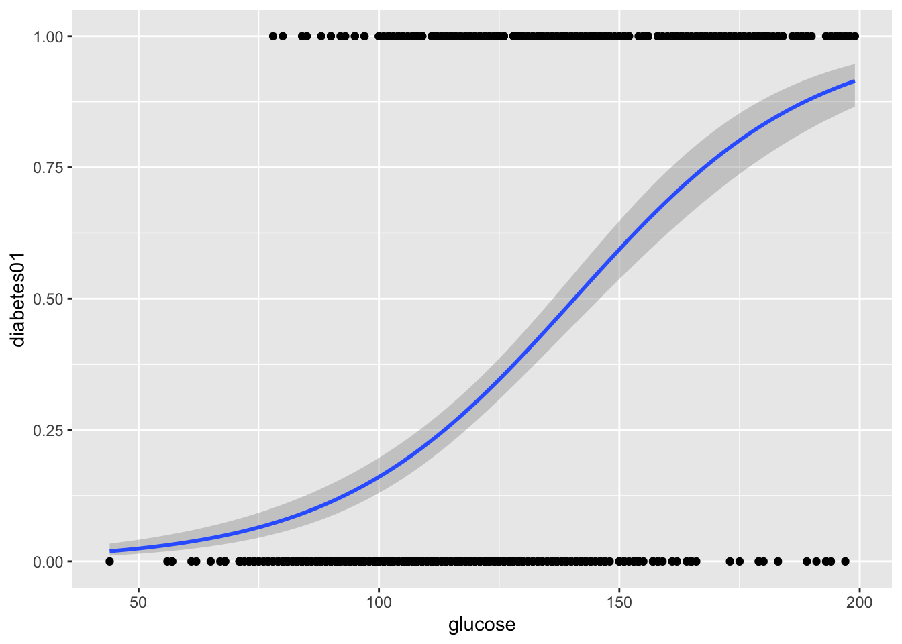
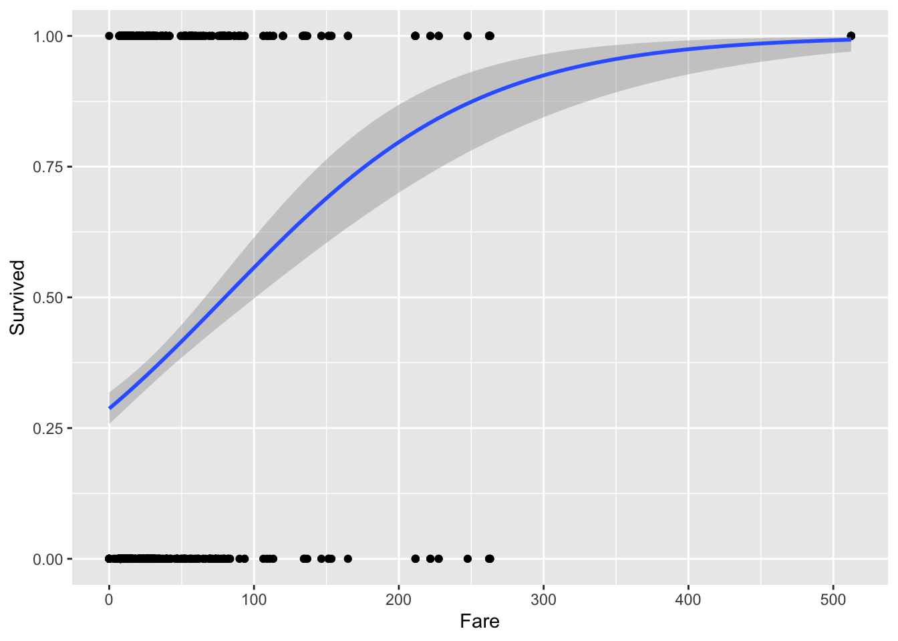

MeCoBi: Modelos de Regresión Logística
D. S. Fernández del Viso
Septiembre 2020
- Regresión Logística
- Regresión Logística vs. Lineal
- ‘Odd ratios’ y logit
- Modelo de Regresión Logística
- EJEMPLO 1: Predicción de alta presión en mujeres
- Modelo logístico con glm
- Resultados de glm - prueba de hipótesis
- Resultados - odd ratios
- EJEMPLO 2: Variables predictoras de diabetes tipo 2, en una población de nativos Pima
- Modelo usando glm - resultados
- Resultados como odd ratios
- Gráfica logística diabetes vs glucosa
Regresión Logística
En una regresión logística la variable respuesta (dependiente) es una variable binaria (dicótoma en términos generales), y las variables predictoras (independientes) pueden ser binarias, categóricas o continuas.
Regresión Logística vs. Lineal
TUTORIAL Logistic Regression vs Linear Regression 
Si se aplica una regresión lineal los valores de predicción de Y pueden exceder los límites 0 y 1.
‘Odd ratios’ y logit
Como la variable respuesta solo puede tener valores entre 0 o 1, y las variables independientes pueden ser continuas, con cualquier valor real, para formular un modelo de regresión logística se hace una transformación de probabilidades a ‘razones de probabilidades’ (en inglés odd ratios (ORs)), o proporción de casos favorables a desfavorables.
La transformación tiene esta forma:
\[OR_i = \frac{\pi}{1-\pi} \qquad (1)\] donde \(\pi\) es la probabilidad de que el evento dependiente (\(Y\)) ocurra; luego se calcula el logaritmo del \(OR\), el cual se denomina logit:
\[logit = log\frac{\pi}{1-\pi} \qquad (2)\]
Modelo de Regresión Logística
El modelo para la regresión, con dos variables independientes (\(x_1\), \(x_2\)), es:
\[logit=\beta_0 + x_1\beta_1 +x_2\beta_2\qquad (3)\]
EJEMPLO 1: Predicción de alta presión en mujeres
Vamos a explorar un modelo de diagnóstico de alta presión, a partir de datos de mujeres (n = 189), en relación a su edad, estado de menopausia, y el índice de masa corporal. Los datos están codificados como variables binarias:
| Variables | Nombre | Código |
|---|---|---|
| Edad (años) | age | 0:≤50, 1>50 |
| Alta presión | dxhigh | 0:no, 1:sí |
| BMI (kg/m2) | bmi | 0:≤25, 1:>25 |
| Menopausia | menop | 0:pre-, 1:menopausia |
Para este modelo utilizaremos la función glm (general linear model):
Modelo logístico con glm
Se usa family = binomial().
#modelo logístico:
highbp <- glm(dxhigh ~ age + bmi + menop, data = hbp,
family=binomial())Resultados de glm - prueba de hipótesis
#resumen de los resultados:
summary(highbp)##
## Call:
## glm(formula = dxhigh ~ age + bmi + menop, family = binomial(),
## data = hbp)
##
## Deviance Residuals:
## Min 1Q Median 3Q Max
## -1.0392 -0.8084 -0.6580 1.3222 2.0781
##
## Coefficients:
## Estimate Std. Error z value Pr(>|z|)
## (Intercept) -2.0367 0.4550 -4.476 7.61e-06 ***
## age 0.6376 0.4920 1.296 0.195
## bmi 0.6165 0.4620 1.334 0.182
## menop 0.4484 0.4887 0.918 0.359
## ---
## Signif. codes: 0 '***' 0.001 '**' 0.01 '*' 0.05 '.' 0.1 ' ' 1
##
## (Dispersion parameter for binomial family taken to be 1)
##
## Null deviance: 218.39 on 188 degrees of freedom
## Residual deviance: 206.60 on 185 degrees of freedom
## AIC: 214.6
##
## Number of Fisher Scoring iterations: 4Resultados - odd ratios
#obtener los coeficientes como ORs:
exp(cbind(OR = coef(highbp), confint(highbp)))## OR 2.5 % 97.5 %
## (Intercept) 0.1304608 0.0491431 0.2984743
## age 1.8919266 0.7125247 4.9772745
## bmi 1.8523471 0.7836975 4.9120329
## menop 1.5658815 0.6016810 4.1448987EJEMPLO 2: Variables predictoras de diabetes tipo 2, en una población de nativos Pima
En este caso las variables independientes no son binarias (0,1) sino datos continuos.
Datos
# paquetes
library(tidyverse)
library(caret)
library(mlbench)
# cargar datos (estos son directamente del paquete mlbench, en su caso debe usar readxl o similar)
data("PimaIndiansDiabetes2", package = "mlbench")
# inspeccionar los datos
sample_n(PimaIndiansDiabetes2, 6)## pregnant glucose pressure triceps insulin mass pedigree age diabetes
## 638 2 94 76 18 66 31.6 0.649 23 neg
## 498 2 81 72 15 76 30.1 0.547 25 neg
## 52 1 101 50 15 36 24.2 0.526 26 neg
## 519 13 76 60 NA NA 32.8 0.180 41 neg
## 197 1 105 58 NA NA 24.3 0.187 21 neg
## 394 4 116 72 12 87 22.1 0.463 37 negModelo usando glm - resultados
library(MASS)
# Fit the model
model <- glm(diabetes ~., data = PimaIndiansDiabetes2, family = binomial())
# Summarize the final selected model
summary(model)##
## Call:
## glm(formula = diabetes ~ ., family = binomial(), data = PimaIndiansDiabetes2)
##
## Deviance Residuals:
## Min 1Q Median 3Q Max
## -2.7823 -0.6603 -0.3642 0.6409 2.5612
##
## Coefficients:
## Estimate Std. Error z value Pr(>|z|)
## (Intercept) -1.004e+01 1.218e+00 -8.246 < 2e-16 ***
## pregnant 8.216e-02 5.543e-02 1.482 0.13825
## glucose 3.827e-02 5.768e-03 6.635 3.24e-11 ***
## pressure -1.420e-03 1.183e-02 -0.120 0.90446
## triceps 1.122e-02 1.708e-02 0.657 0.51128
## insulin -8.253e-04 1.306e-03 -0.632 0.52757
## mass 7.054e-02 2.734e-02 2.580 0.00989 **
## pedigree 1.141e+00 4.274e-01 2.669 0.00760 **
## age 3.395e-02 1.838e-02 1.847 0.06474 .
## ---
## Signif. codes: 0 '***' 0.001 '**' 0.01 '*' 0.05 '.' 0.1 ' ' 1
##
## (Dispersion parameter for binomial family taken to be 1)
##
## Null deviance: 498.10 on 391 degrees of freedom
## Residual deviance: 344.02 on 383 degrees of freedom
## (376 observations deleted due to missingness)
## AIC: 362.02
##
## Number of Fisher Scoring iterations: 5Resultados como odd ratios
# odds
exp(cbind(OR = coef(model), confint(model)))## OR 2.5 % 97.5 %
## (Intercept) 4.358754e-05 3.548295e-06 0.0004258459
## pregnant 1.085629e+00 9.743237e-01 1.2116311454
## glucose 1.039011e+00 1.027717e+00 1.0513035403
## pressure 9.985807e-01 9.757909e-01 1.0223068780
## triceps 1.011285e+00 9.778466e-01 1.0457799522
## insulin 9.991750e-01 9.966180e-01 1.0017675218
## mass 1.073085e+00 1.017827e+00 1.1335373213
## pedigree 3.129611e+00 1.378380e+00 7.3682727463
## age 1.034535e+00 9.985446e-01 1.0735228530Gráfica logística diabetes vs glucosa
library(ggplot2)
#pasar datos de diabetes "pos" y "neg" a 1s y 0s
diabetes01 <- ifelse(PimaIndiansDiabetes2$diabetes == "pos", 1, 0)
#gráfica con curva logística
ggplot(PimaIndiansDiabetes2, aes(x=glucose, y=diabetes01, na.rm = TRUE)) +
geom_point() +
geom_smooth(method = "glm",
method.args = list(family = "binomial"),
se = TRUE) # TITANIC
Datos
library(readxl)
titanic <- read_excel("data/Titanic.xlsx", na = "NA")
head(titanic)## # A tibble: 6 x 12
## PassengerId Survived Pclass Name Sex Age SibSp Parch Ticket Fare Cabin
## <dbl> <dbl> <dbl> <chr> <chr> <dbl> <dbl> <dbl> <chr> <dbl> <chr>
## 1 1 0 3 Braund… male 22 1 0 A/5 2… 7.25 <NA>
## 2 2 1 1 Cuming… fema… 38 1 0 PC 17… 71.3 C85
## 3 3 1 3 Heikki… fema… 26 0 0 STON/… 7.92 <NA>
## 4 4 1 1 Futrel… fema… 35 1 0 113803 53.1 C123
## 5 5 0 3 Allen,… male 35 0 0 373450 8.05 <NA>
## 6 6 0 3 Moran,… male NA 0 0 330877 8.46 <NA>
## # … with 1 more variable: Embarked <chr>modelo logistico
library(ggplot2)
library(MASS)
# Fit the model
model_1 <- glm(Survived ~ Pclass + Sex + Age + SibSp + Parch + Fare, data = titanic, family = binomial())
# Summarize the selected model
summary(model_1)##
## Call:
## glm(formula = Survived ~ Pclass + Sex + Age + SibSp + Parch +
## Fare, family = binomial(), data = titanic)
##
## Deviance Residuals:
## Min 1Q Median 3Q Max
## -2.7412 -0.5370 -0.3412 0.4798 2.6260
##
## Coefficients:
## Estimate Std. Error z value Pr(>|z|)
## (Intercept) 5.194259 0.539640 9.625 < 2e-16 ***
## Pclass -1.079980 0.147145 -7.340 2.14e-13 ***
## Sexmale -3.612642 0.206781 -17.471 < 2e-16 ***
## Age -0.033917 0.007253 -4.676 2.92e-06 ***
## SibSp -0.361463 0.117951 -3.065 0.00218 **
## Parch -0.138610 0.112796 -1.229 0.21913
## Fare 0.002148 0.002050 1.048 0.29459
## ---
## Signif. codes: 0 '***' 0.001 '**' 0.01 '*' 0.05 '.' 0.1 ' ' 1
##
## (Dispersion parameter for binomial family taken to be 1)
##
## Null deviance: 1400.72 on 1044 degrees of freedom
## Residual deviance: 795.65 on 1038 degrees of freedom
## (264 observations deleted due to missingness)
## AIC: 809.65
##
## Number of Fisher Scoring iterations: 5# OD ratios
exp(cbind(OR = coef(model_1), confint(model_1)))## OR 2.5 % 97.5 %
## (Intercept) 180.23462168 63.89116107 531.22476412
## Pclass 0.33960247 0.25344159 0.45171235
## Sexmale 0.02698046 0.01777309 0.04001895
## Age 0.96665153 0.95282043 0.98033246
## SibSp 0.69665630 0.54983069 0.87403748
## Parch 0.87056773 0.69527314 1.08480156
## Fare 1.00215050 0.99820392 1.00641298#gráfica con curva logística
ggplot(titanic, aes(x=Fare, y=Survived, na.rm = TRUE)) +
geom_point() +
geom_smooth(method = "glm",
method.args = list(family = "binomial"),
se = TRUE)